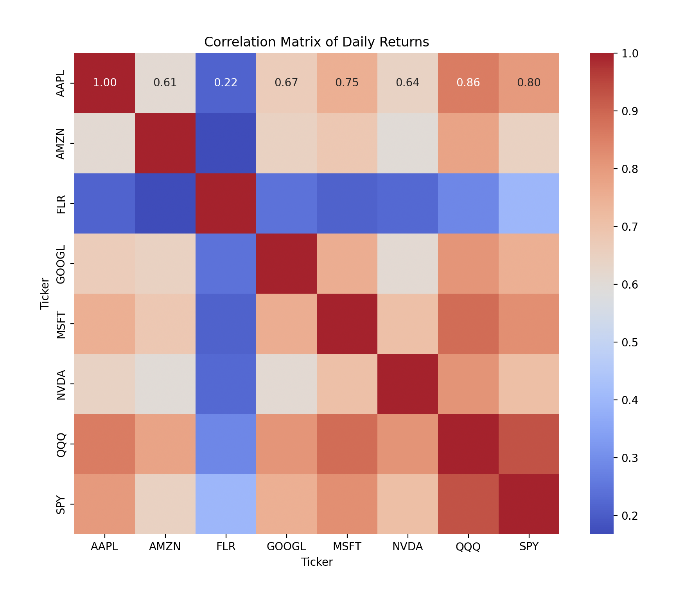

INTRO
Traditionally, stock market analysis has been the domain of financial experts, requiring a deep understanding of market trends, economic indicators, and complex mathematical models. However, with the advent of machine learning and data science, the opportunity to distill this complexity into actionable insights has never been more attainable. Recognizing this, I set out to create Stock Prophet — a platform that bridges the gap between sophisticated financial analysis and everyday investors.
At the core of my solution is the service for stock price prediction. The service is built upon a sophisticated back-end infrastructure that employs Long Short-Term Memory (LSTM) network models.
The foundational hypothesis is that stock prices, despite their apparent market volatility, follow patterns that can be discerned from historical data through the application of LSTM networks and additional machine learning models. By integrating these models with high-quality, detailed tech data from reputable sources (such as Yahoo Finance), my application aims to uncover these patterns, offering predictive insights that were previously accessible only to professional analysts.
The solution analyzes the interconnectivity within the tech sector, understanding that movements in major indices and changes within leading companies can have a ripple effect across the sector.
The LSTM is trained on the stocks from the top 5 tech companies. The model learns from the patterns in the historical price movements of these specific stocks. This training encapsulates general patterns that are reflective of the tech sector, broader market trends, or the behavior of stock prices in response to various economic signals. Stocks often move in response to broader market trends. If the model has learned these trends from the big tech companies, which are significant market movers, it could apply that knowledge to predict other stocks that are influenced by similar economic and market forces. Tech stocks often move together as a sector. By learning from multiple big players within the tech industry, the model might capture sector-specific trends that are applicable to other tech companies.
Reason for Hypothesis
In the realm of finance, the stock market serves as a barometer for the economic health of industries and individual companies. Within this intricate ecosystem, the technology sector stands out for its rapid innovation, growth, and significant influence on global markets. Leading the charge are tech behemoths like Apple, Google (Alphabet), Microsoft, Amazon, and Nvidia, whose movements on the stock market create ripples that affect a wide array of other technology companies.
My project delves into how these industry leaders shape the stock price values of other tech entities and the underpinnings of their influential roles.
Some examples of why these tech giants influence the entire market -
Cloud domain (Google, Microsoft and Amazon) –
Google Cloud, Amazon Web Services (AWS), and Microsoft Azure are the backbone of countless tech companies, ranging from startups to established firms. These cloud platforms provide essential services such as computing power, data storage, and various SaaS (Software as a Service) solutions, enabling businesses to scale without the need for substantial capital investment in physical infrastructure. The dependency on these services means that any changes in pricing, service availability, or technological advancements by these cloud providers can have immediate and far-reaching effects on the operational costs and capabilities of dependent companies. Thus, the financial performance and strategic directions of Amazon, Google, and Microsoft can significantly impact the stock prices of companies that rely on their cloud services.
Nvidia's Role in AI and Computing –
Nvidia has emerged as another central figure, primarily due to its dominance in the GPU market, which is crucial for AI and machine learning computations. As AI technologies become more integrated into various products and services, companies that develop or utilize AI solutions are increasingly dependent on Nvidia's hardware and software ecosystems. Nvidia's innovations, pricing strategies, and supply chain dynamics can thus have a considerable influence on the valuation and performance of a broad spectrum of tech companies, especially those heavily invested in AI and machine learning.
Analysis using Correlation matrix –
Correlation measures the degree to which two variables move in relation to each other. In finance, it is often used to determine how closely the stock prices of two companies are related. The correlation coefficient ranges from -1 to 1.
- A correlation coefficient of 1 implies a perfect positive correlation, meaning that as one stock price moves, either up or down, the other stock price moves in the same direction by a proportional amount.
- A correlation coefficient of -1 implies a perfect negative correlation, meaning that if one stock price increases, the other decreases by a proportional amount, and vice versa.
- A correlation coefficient close to 0 implies little to no linear relationship between the movements of the two stock prices.
Fluor Corp is an American multinational engineering and construction firm. I have used this company along with the tech companies to show how the correlation effects a different domain other than tech.
Below is the correlation matrix I have generated using the closing prices of – AAPL (Apple), GOOGL (Google), MSFT (Microsoft), AMZN (Amazon), NVDA (Nvidia), SPY (SPDR S&P 500 ETF Trust), QQQ (NASDAQ) and FLR (Fluor Corp).

From this matrix, we can derive several insights:
- High Positive Correlation within Tech Stocks and Indices: There is a generally high positive correlation among the tech stocks (AAPL, AMZN, GOOGL, MSFT, NVDA) and the indices (QQQ, SPY). This suggests that these stocks often move in the same direction as each other and with the broader market, represented here by QQQ (NASDAQ-100) and SPY (S&P 500).
- Highest Correlations with Indices: Stocks like AAPL, MSFT, and NVDA have very high correlations with QQQ and SPY. This is expected as these companies have significant weights in these indices, and movements in these stocks can have a strong influence on the index movements.
- Comparison between Indices: QQQ, which represents the NASDAQ-100, has a higher correlation with individual tech stocks compared to SPY. This makes sense since QQQ is more tech-focused, whereas SPY represents a broader range of sectors.
- Lower Correlations: Fluor Corp (FLR) has a lower correlation with other stocks and indices compared to the rest of the group. This could be due to the fact that FLR is a non-tech company, possibly being influenced by different factors than pure tech companies. But the fact that it is a positive correlation underscores the fact that the tech giants play a huge role in the entire economic landscape.